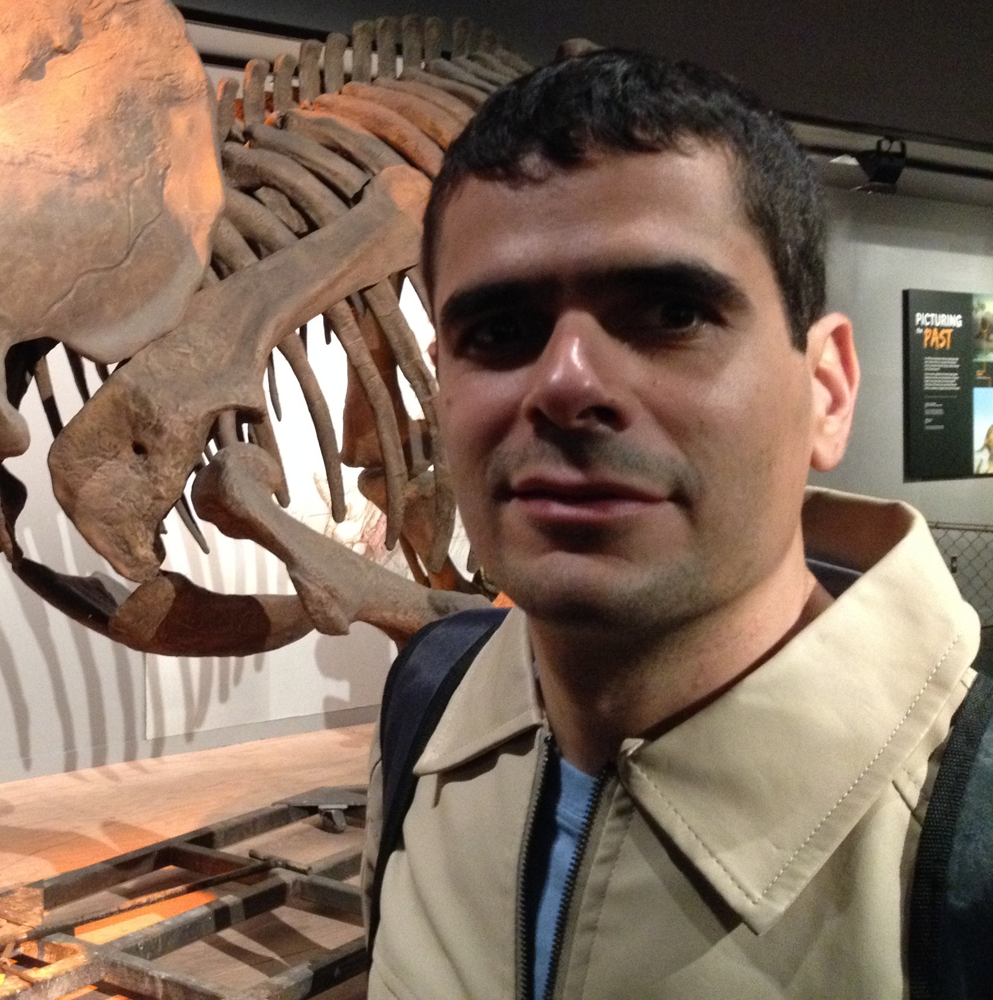

Research group focused on Population Genetics, forensic identification markers, human pigmentation variation, and next-generation sequencing applied to forensic genomics.

Professor Associado III · FFCLRP-USP
Research Productivity Fellow of CNPq (since 2012). BSc in Biological Sciences (1998), MSc (2001) and PhD (2005) in Genetics at USP, with habilitation (livre-docência) in Forensic Molecular Biology (2017). Auditor of the Integrated Genetic Profile Bank Network (RIBPG/Ministry of Justice) in the 2022 and 2024 cycles. Founding member of the Brazilian Society of Forensic Sciences (SBCF). Develops projects with the Scientific Police of Paraná and the Federal Police, focused on introducing NGS technologies (Illumina, Ion Torrent and Oxford Nanopore) in forensic units of the RIBPG.
Our research sits at the intersection of population genetics, forensic science, and genomic technologies.
STR genotyping, NGS forensic profiling, mixture interpretation, pipeline validation across Illumina and Oxford Nanopore.
Genetic diversity in admixed Brazilian and Latin American populations, focusing on ancestry informative markers and human variation.
Genetic markers in pigmentation variation. Phenotypic prediction for forensic applications.
HLA gene diversity, vitiligo-associated markers, and immunogenetics in Brazilian populations.
Oxford Nanopore for genome and methylome analyses.
Accessible bioinformatics for forensic genomics. STRhub and HipSTR-UI
From population genetics and forensic genomics to open bioinformatics tools.
Integrated analysis of genetic diversity, methylation of regulatory regions, and gene expression for skin pigmentation and epigenetic age prediction in admixed Brazilians. Funded by CNPq (Universal Call 2023).
Application of CpG island methylation for age and pigmentation prediction from epithelial tissue. PROCAD-SPCF/CAPES program with national and international partners.
Validation of forensic phenotyping protocols and methylation analysis for missing-persons searches using massively parallel sequencing and long reads.
Construction and validation of autosomal microhaplotype panels for degraded samples and forensic mixture deconvolution. Funded by FAPESP.
Identification and validation of markers related to differential gene expression in forensic fluids and tissues of interest.
Open-source platform for analysis, visualization and education in forensic and population genetics. strhub.app
Peer-reviewed contributions to forensic genetics, population genomics, and bioinformatics.
Kobachuk LDG, Moraes VMS, …, Mendes-Junior CT.
Frontanilla TS, De Sousa Ferrari M, Ayala J, Mendes-Junior CT.
Schellin-Becker CM, Moraes VMS, Malheiros D, Mendes-Junior CT.
Ferreira MR, Carratto TMT, Frontanilla TS, …, Mendes-Junior CT.
Fonseca RIB, Valle-Silva G, Mendes-Junior CT, Fridman C.
Kobachuk LDG, Moraes VMS, Carratto TMT, …, Mendes-Junior CT.
Moraes VMS, Carratto TMT, da Silva HAF, Mendes-Junior CT.
We collaborate with leading researchers and institutions in forensic genetics and genomics.
Dra. Silviene Fabiana de Oliveira
Dr. Eduardo A. Donadi
Dr. Aguinaldo Luiz Simões
Active research collaboration (NGS forensic) · Luciellen Davila Giacomel Kobachuk, Pedro Henrique Canezin, Marcelo Malaghini, Marianna Maia Taulois do Rosário
Active collaboration (forensic NGS) · Ronaldo [surname TBC], Diana [surname TBC]
Anthropology Department
Anthropology Department
Dr. David Courtin, Dr. Audrey Sabbagh
Dr. Philippe Moreau
Our lab is equipped for wet lab genomics and high-performance computational analysis.
Long-read sequencing on the PromethION P2 Solo for STR genotyping and whole-genome analysis.
Dedicated computational infrastructure for large-scale genomic data processing.
DNA and RNA extraction and quantification, PCR amplification, and library preparation for sequencing.
Custom pipelines for forensic genomics, population genomics, and massively parallel sequencing analysis.
Além da pesquisa, o LPFG mantém uma sólida tradição na formação de recursos humanos, orientando alunos da Iniciação Científica ao Pós-Doutorado.
Integrantes atuais do LPFG, com formação em andamento e link para currículo Lattes.
Genômica forense de STRs · Sequenciamento NGS Illumina e ONT · Bioinformática e desenvolvimento de software · Plataformas educacionais abertas · Genética de populações · Populações indígenas do Paraguai
strhub.appTese de DoutoradoPesquisadores e estudantes que desenvolveram sua formação no LPFG.
Departamento de Química · FFCLRP
Faculdade de Medicina de Ribeirão Preto · USP · Brazil
PI: Prof. Dr. Celso T. Mendes Junior
ORCID: 0000-0002-7337-1203
We welcome collaborations in forensic genetics, population genomics, and bioinformatics tool development.
Send us an email